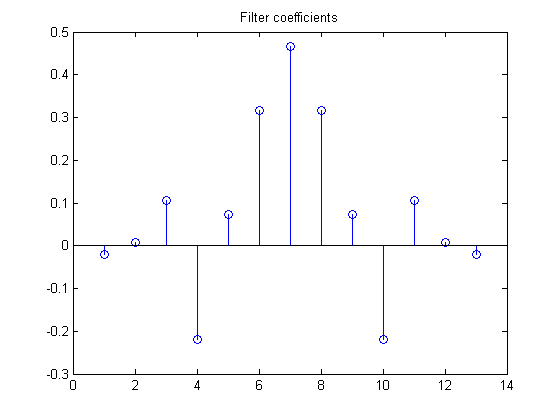
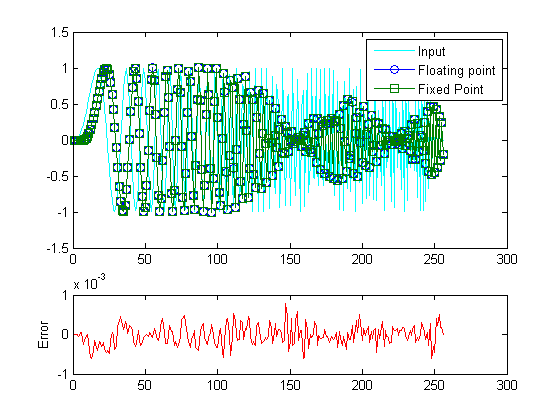

Embedded MATLAB® MEX を使用した固定小数点のローパス フィルター処理
これは、Embedded MATLAB® C-MEX 生成 (emlmex) のいくつかの側面を示すデモです。C-MEX 関数を MATLAB® コードから生成し、生成した C-MEX 関数を実行し、結果を表示します。
目次
デモの説明
この例では、信号の加重平均を取得します。重みまたは係数を特定の方法で選択すると、高周波数のみを平均化し、低周波数を保持することができます。低周波数が修正なしで通過できるため、これは "ローパス フィルター" と呼ばれています。このようなフィルターは、たとえば電話の高周波数ノイズを除去する場合に使用されます。一方、係数を選択すると、別の周波数帯域を除去できます。
必要なファイルのコピー
このデモを実行するには MATLAB ファイルが必要です。このファイルを一時ディレクトリにコピーします。この手順では、システムの一時ディレクトリへの書き込み権限が必要です。
emlmexdir = [tempdir filesep 'emlmexdir']; if ~exist(emlmexdir,'dir') mkdir(emlmexdir); end emlmexsrc = ... fullfile(matlabroot,'toolbox','fixedpoint','fidemos','emlmexfilter.m'); copyfile(emlmexsrc,emlmexdir,'f');
MATLAB 加重平均フィルター関数コードを調べる
加重平均を実行する MATLAB 関数は、emlmexfilter.m ファイルにあります。このコードは、単純に直接型 II 転置 FIR フィルターを実装する関数 FILTER を呼び出します。
type(fullfile(emlmexdir,'emlmexfilter.m'))
function y = emlmexfilter(b, x) %EMLMEXFILTER Filter used in EMLMEXBASICSDEMO. % Copyright 1984-2009 The MathWorks, Inc. %#eml y = filter(b, 1, x);
この関数では、以下の変数が使用されます。
- b はフィルター係数ベクトルです。
- x は入力信号ベクトルです。
- y は出力信号ベクトルです。
フィルターの効果を確認できるようにするには、入力 x のチャープ信号を使用します。このチャープが再生されると、低周波数から高周波数となり、小鳥のさえずりのような音を出します。出力のプロットでは、低周波数が (少しだけ遅延はありますが) 変更されることなく通過し、高周波数が減衰されることを確認できます。
ローパス係数の作成
Signal Processing Toolbox™ を使用し、FIR フィルターの係数を作成します。
% [L,fo,mo,w] = firpmord([1500 2000],[1 0], [0.01 01.], 8000 ); % b = firpm(L,fo,mo,w);
b = [ -0.0204578867332896
0.0086603954613574
0.1068667619076360
-0.2187706460534480
0.0730546552429822
0.3153037876114750
0.4649509557016000
0.3153037876114750
0.0730546552429822
-0.2187706460534480
0.1068667619076360
0.0086603954613574
-0.0204578867332896]';
stem(b)
title('Filter coefficients')
 チャープ入力信号の作成
Fs = 256; % Sampling frequency Ts = 1/Fs; % Sample time t = 0:Ts:1-Ts; % Time vector from 0 to 1 second f1 = Fs/2; % Target frequency of chirp set to Nyquist gain = (1 - 2^-15); % Scale the input to be in the range [-1, +1) x0 = gain * sin(pi*f1*t.^2); % Linear chirp from 0 to Fs/2 Hz in 1 second.
浮動小数点データ型でフィルターを実行
emlcurdir = pwd; cd(emlmexdir); yfl = emlmexfilter(b, x0);
固定小数点パラメーターの定義
12 ビットの語長の符号付き最高精度固定小数点入力引数を定義します。
reset(fipref); bfi = sfi(b, 12); xfi = sfi(x0, 12);
MATLAB ファイルから MEX ファイルへのコンパイルとコンパイル レポートの生成
emlmex emlmexfilter -report -eg {bfi, xfi} -o emlmexfilterx
C-MEX generation successful:To view the report, evaluate:open('C:\TEMP\R2010bd_32_3440\emlmexdir\emcprj\mexfcn\emlmexfilter\html\index.html').
固定小数点データ型でフィルターを実行
yfi = emlmexfilterx(bfi, xfi);
結果のプロット
t = 1:length(x0); subplot(3,1,[1 2]); plot(t,x0,'c',t,yfl,'o-',t,yfi,'s-'); legend('Input','Floating point','Fixed Point'); subplot(3,1,3); plot(double(yfi(:))-yfl(:),'r'); ylabel('Error'); figure(gcf);
一時ファイルのクリーンアップ
cd(emlcurdir); clear emlmexfilterx; status = rmdir(emlmexdir,'s');